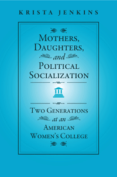

<body bgcolor="#FFFFFF" text="#000000" link="#0000FF" vlink="#CC0000" alink="#CC0000"><center><hr width="350" size="1" align="center" noshade>Shedding new light on the political socialization of American women<hr width="350" size="1" align="center" noshade><p><a href="https://cdcshoppingcart.uchicago.edu/Cart/ChicagoBook.aspx?ISBN=9781439909270&&PRESS=temple" target="_top">Buy this book!</a> | <a href="https://cdcshoppingcart.uchicago.edu/Cart/Cart.aspx?PRESS=temple" target="_top">View Cart</a> | <a href="https://cdcshoppingcart.uchicago.edu/Cart/Cart.aspx?PRESS=temple" target="_top">Check Out</a></p><p></p></center><!--none//--><h1>Mothers, Daughters, and Political Socialization</h1>
<H2>Two Generations at an American Women's College</H2>
<h3>Krista Jenkins</h3>
<P>cloth 1-4399-0927-X $75.50, Mar 13, <FONT COLOR=#990033>Available</FONT>
<br>paper 1-4399-0928-8 $29.95, Mar 13, <FONT COLOR=#990033>Available</FONT>
<br>Electronic Book 1-4399-0929-6 $28.95 <FONT COLOR=#990033>Available</FONT>
<BR> 178 pp
6x9
9&nbsp;tables
</P><BLOCKQUOTE><I>"Jenkins provides a fresh approach to and a timely analysis of women's political engagement. </I>Mothers, Daughters, and Political Socialization<I> is a lively read, featuring captivating and compelling stories and life histories. This book will fill important gaps in our understanding of the persistence of gender inequality and women’s attitudes toward feminism and the women's movement."</I><br>&#151<b>Verta Taylor</b>, Professor and Chair of Sociology
at the University of California, Santa Barbara</I></BLOCKQUOTE>
<P>Using a unique data set comparing mothers and daughters who attended Douglass College—the women's college of Rutgers University—twenty-five years apart, Krista Jenkins perceptively observes the changes in how women acquire their attitudes toward gender roles and behaviors in the post-women's movement years.
<P><I>Mothers, Daughters, and Political Socialization</I> examines the role of intergenerational transmission—the maternal influences on younger women—while also looking at differences among women in attitudes and behaviors relative to gender roles that might be attributed to the nature of the times during their formative years. How do daughters coming of age in an era when the women's movement is far less visible deal with gendered expectations compared to their mothers? Do they accept the contemporary status quo their feminist mothers fought so hard to achieve? Or, do they press forward with new goals?
<P>Jenkins shows how contemporary women are socialized to accept or reject traditional gender roles that serve to undermine their equality.
<BR>&nbsp;<h2>Excerpt</h2><P>Excerpt available at <a href="http://www.temple.edu/tempress">www.temple.edu/tempress</a></p>
<BR>&nbsp;<h2>Reviews</h2>
<p><i>"Jenkins delves into issues of gender inequality, gender roles, generational differences, and the women’s movement.... [She] explores how attitudes about gender, especially within the realm of politics, have evolved over a generation.... She does a wonderful job illustrating the ways in which the mothers and daughters today handle and process their experiences as women. This book is appropriate for courses on gender, feminism, and politics."</I><br>&#151<b><i>Contemporary Sociology</b></i>
<BR>&nbsp;<h2>Contents</h2><P>
<p>Preface
<br>
<br>Introduction
<br>1. Gender Roles and Political Socialization
<br>2. Considering the Women’s Movement
<br>3. Gender Roles and Private Life
<br>4. Gender Roles and Public Life
<br>5. Gender Roles and the Political Process
<br>6. Consistency and Consolidation
<br>
<br>Appendix
<br>Notes
<br>Bibliography
<br>Index
</P><BR>&nbsp;<H2>About the Author(s)</H2>
<P><b>Krista Jenkins</b> is Associate Professor of Political Science at Fairleigh Dickinson University.</P>
<BR><H2>Subject Categories</H2>
<p><A HREF="/tempress/political.html" TARGET="_top">Political Science and Public Policy</a>
<BR><A HREF="/tempress/women.html" TARGET="_top">Women's Studies</a>
<BR><A HREF="/tempress/sociology.html" TARGET="_top">Sociology</a>
</p>
<BR><h2 class="inpageheading">In the series</H2>
<P><I><a href="http://www.temple.edu/tempress/social_logic.html" onMouseOver="window.status='Click for other books in this series!'; return true;" onMouseOut="window.status=''; return true;" target="_top">Social Logic of Politics</a></i>, edited by Scott D. McClurg.
</p><p>The <i>Social Logic of Politics Series</i>, edited by Scott D. McClurg (formerly edited by Alan S. Zuckerman), directs attention to several related clusters of research in the social sciences. At the core is a theoretical principle: individuals make political decisions, like other choices, by taking into account cues from other persons. Studies move from individuals to groups to large scale collectivities. Usually examining micro-politics-voting and other forms of political participation; the place of politics in households, the family, the friendship unit, and the neighborhood- this research also studies how broader political and social contexts influence and are influenced by these micro-processes. It includes as well "small group behavior" in political institutions, such as exchanges of cues in legislatures and patron-client relations in bureaucratic agencies and political parties. Books in The Social Logic of Politics Series will apply research techniques that run the gamut of contemporary political science, sociology, communications, and geography.</p>
<p align="center"><a href="https://cdcshoppingcart.uchicago.edu/Cart/ChicagoBook.aspx?ISBN=9781439909270&&PRESS=temple" target="_top">Buy this book!</a> | <a href="https://cdcshoppingcart.uchicago.edu/Cart/Cart.aspx?PRESS=temple" target="_top">View Cart</a> | <a href="https://cdcshoppingcart.uchicago.edu/Cart/Cart.aspx?PRESS=temple" target="_top">Check Out</a></p><p><font face="Arial" size="1"><a href="copyright.html" onMouseOver="window.status='Web Copyright Policy';return true;" onMouseOut="window.status=''" title="Web Copyright Policy">&copy;</a> 2015 <a href="http://www.temple.edu" target="new" onMouseOver="window.status='Link to Temple University home page';return true;" onMouseOut="window.status=''" title="Link to Temple University home page">Temple University</a>. All Rights Reserved. http://www.temple.edu/tempress/titles/2236_reg.html</font></p>